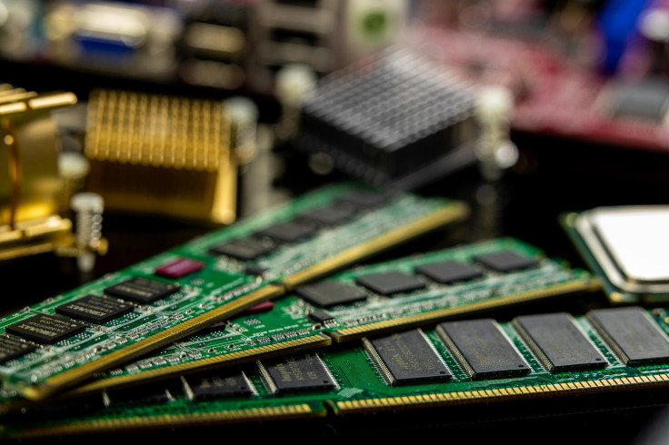

Wpływ AI na gospodarkę
Rozwój sztucznej inteligencji (AI) jest jednym z największych trendów technologicznych ostatnich lat i wywiera ogromny wpływ na gospodarkę. Podobnie jak bańka dot-com w latach 90., AI przyciąga ogromne inwestycje, tym razem w infrastrukturę, dane i nowoczesne centra obliczeniowe.
Wszystko zaczęło się wraz z rozwojem modeli językowych, generatywnej sztucznej inteligencji i uczenia maszynowego. Firmy technologiczne, startupy i inwestorzy z całego świata zaczęli inwestować miliardy dolarów w rozwój AI, nawet jeśli niektóre projekty nie miały jeszcze gotowego produktu. W rezultacie powstała ogromna liczba centrów danych – gigantycznych „fabryk danych” – które wymagają olbrzymich zasobów sprzętowych, przede wszystkim pamięci RAM i procesorów GPU.
Polityka niskich stóp procentowych sprawiła, że inwestycje w technologie AI były łatwo dostępne. Wzrost zainteresowania chmurą obliczeniową i usługami SaaS dodatkowo napędził popyt na centra danych, a ogromna konkurencja w dziedzinie AI sprawiła, że firmy były gotowe płacić coraz więcej za sprzęt, aby trenować coraz większe modele.
Efekty tego boomu zaczęły być odczuwalne w całej gospodarce. Rosnące ceny pamięci RAM i procesorów GPU utrudniały dostęp do sprzętu nie tylko firmom technologicznym, ale także innym sektorom. Firmy inwestowały coraz więcej w AI i infrastrukturę obliczeniową, kosztem innych działów technologii. Zapotrzebowanie na specjalistów od AI rosło w tempie niespotykanym wcześniej, co prowadziło do niedoborów kadrowych i wzrostu wynagrodzeń.
Jednocześnie pojawiają się ryzyka. Podobnie jak w przypadku poprzednich boomów technologicznych, nagły wzrost inwestycji w AI może prowadzić do spekulacji i ewentualnych strat w przyszłości, jeśli zainteresowanie spadnie lub pojawią się problemy technologiczne.
Sztuczna inteligencja staje się nową siłą napędową gospodarki. Jej rozwój przynosi ogromne możliwości, ale również wyzwania – od wzrostu kosztów sprzętu komputerowego, przez przesunięcia w inwestycjach, aż po potencjalne bańki spekulacyjne, które mogą dotknąć rynek w kolejnych latach.